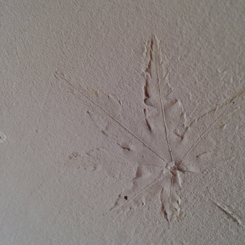
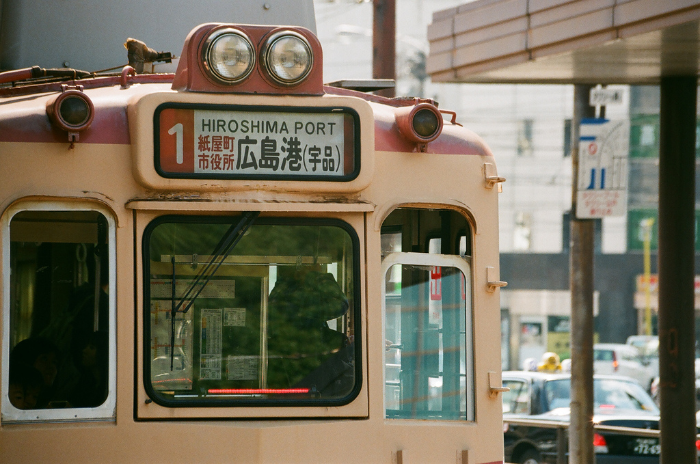

香珈珈琲のお店は、すべて手作りです。
**壁の秘密 [#zcdfeb6b]
床は、かりんの木を使用しています。
花梨の丸太を製材して、床用に加工している。
壁は、珪藻土を塗っている。
珪藻土を塗って始めて実感したのが、珪藻土の湿度調整力のすごさです。
珪藻土は、二度塗りが利かない。一度塗った後にもう一度きれいに塗な直そうとしても、既に塗っている珪藻土が、これから塗る珪藻土の水分を奪ってしまい、ボロボロになって塗れないのです。
これも経験して始めて分かったことです。
さて、香珈の珪藻土を塗った壁に一つの秘密があります。
それは、もみじの葉っぱを形どっててるのです。
どこに有るか来店された時に探してみて下さい。

こんな感じです。
珪藻土を塗る時は、奥の焙煎所から塗りだしましたが、最初は失敗だらけでお見せすることはできないぐらい変になってます。
ちなみに壁の腰板は、檜を使用して、天然塗料を塗っています。
**ドアの秘密 [#x0e01c52]
香珈の入口に有る、大きなガラスにも少しだけ秘密があります。
流石に、ドアは作るにも道具とかか必要だったので、作れなかったのですが、親戚のおじさんに作ってもらいました。
おじさんは、建具屋さんで神輿なども作ったことがあるそうです。
今では、建具を手作りしてくれるところが無くなってきましたね。
さて、素材は、タモの木とイチョウの木で作りました。
それほど秘密と言うことは無いのですが、ドアのガラスは二重ガラス(真空ペアガラス)を使っています。
ガラスが二重になっているので、ガラスとガラスの間には隙間があります。ガラスの間に、小さな丸い玉が入っています。
写真では写ってませんが、規則正しく均等の幅に配置されています。
真空でなくなったらこの玉が移動していまうそうです。
真空であるかどうかは、右上に丸いボタンが付いていて、このボタンが落ちると真空ではないことを意味しています。
いつまで持つのでしょうか。
香珈も既に、11年目を迎えましたが、まだ大丈夫です。

これも一度是非見て下さい。
